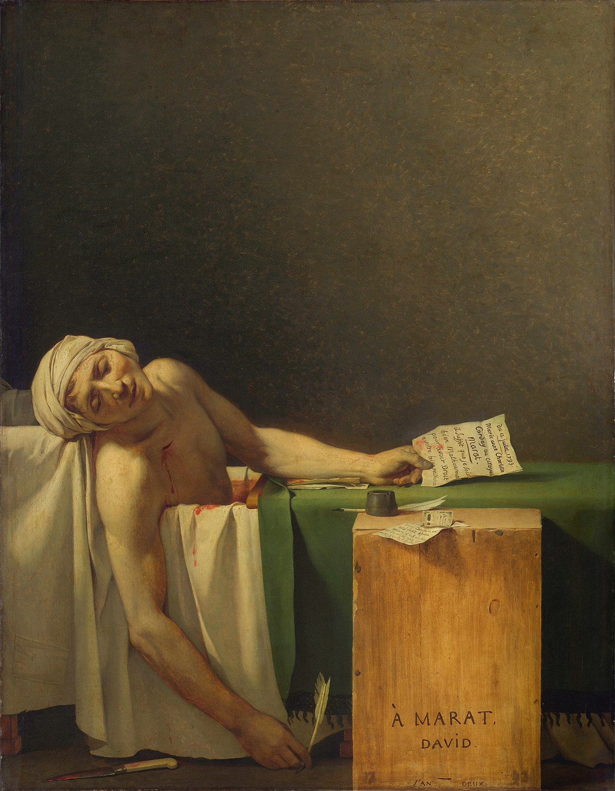
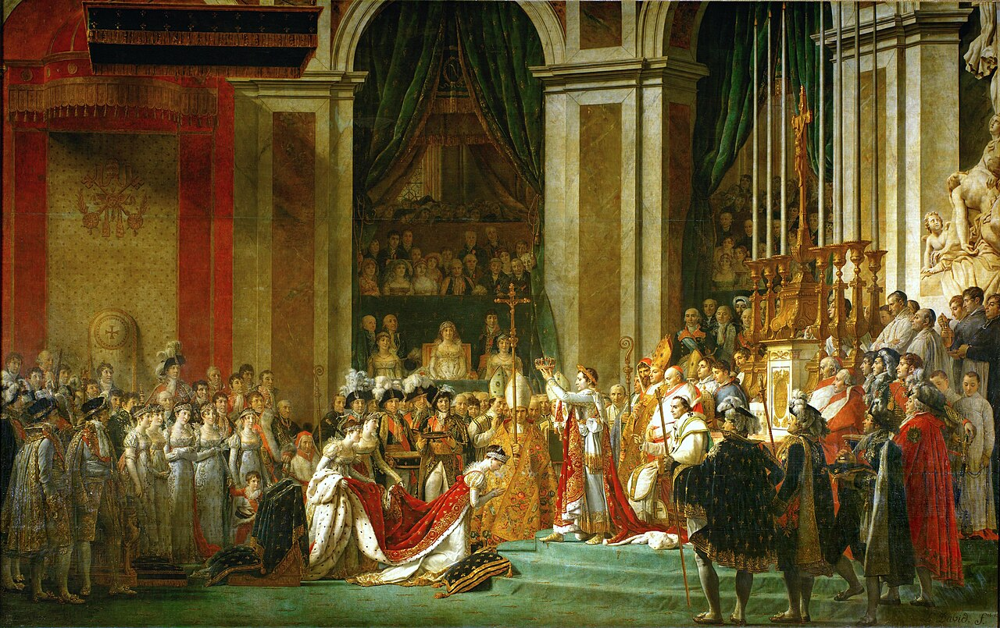
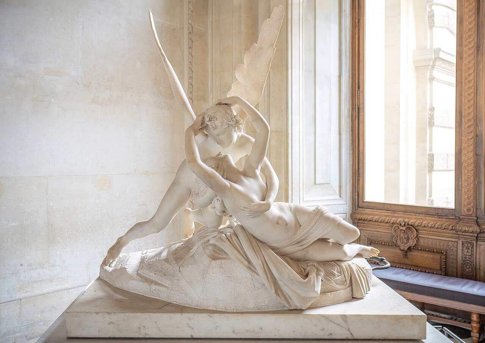
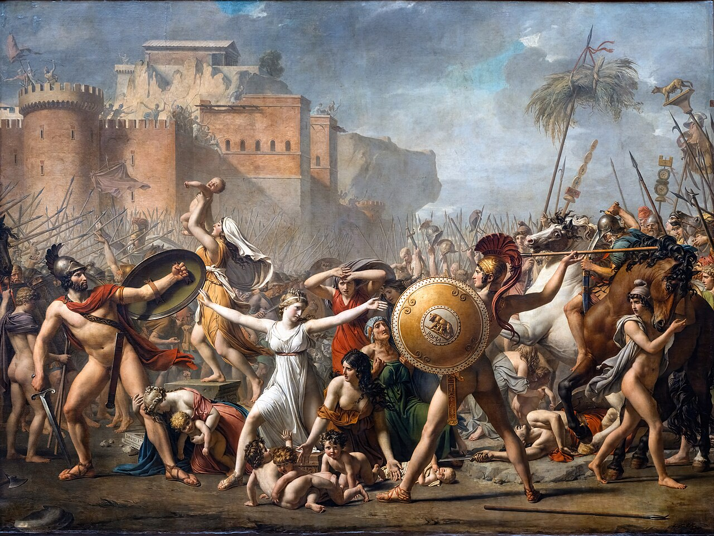
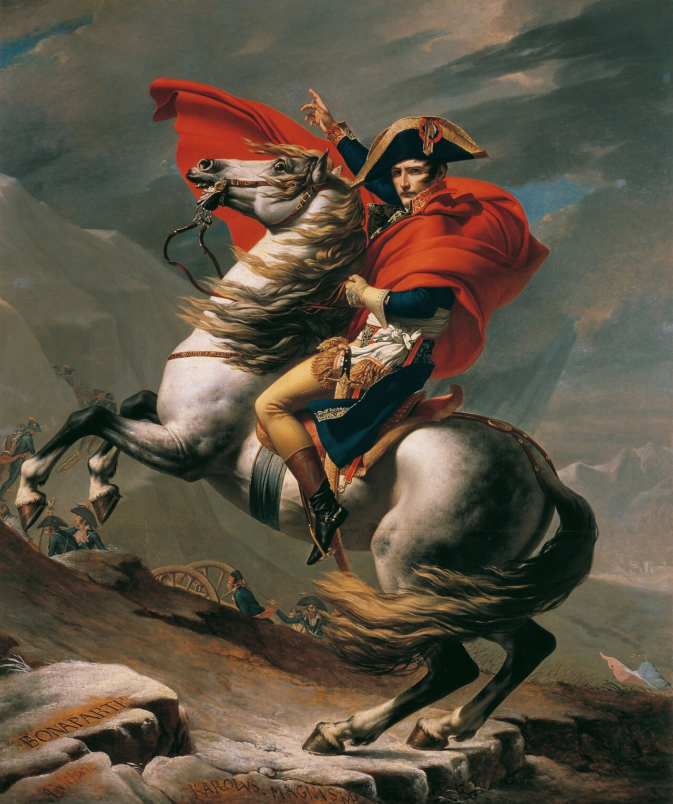
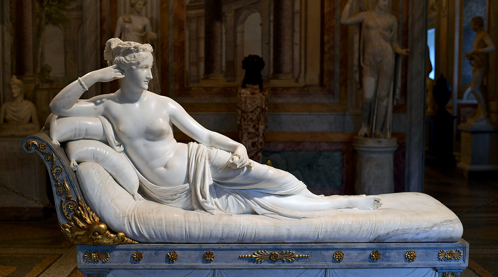
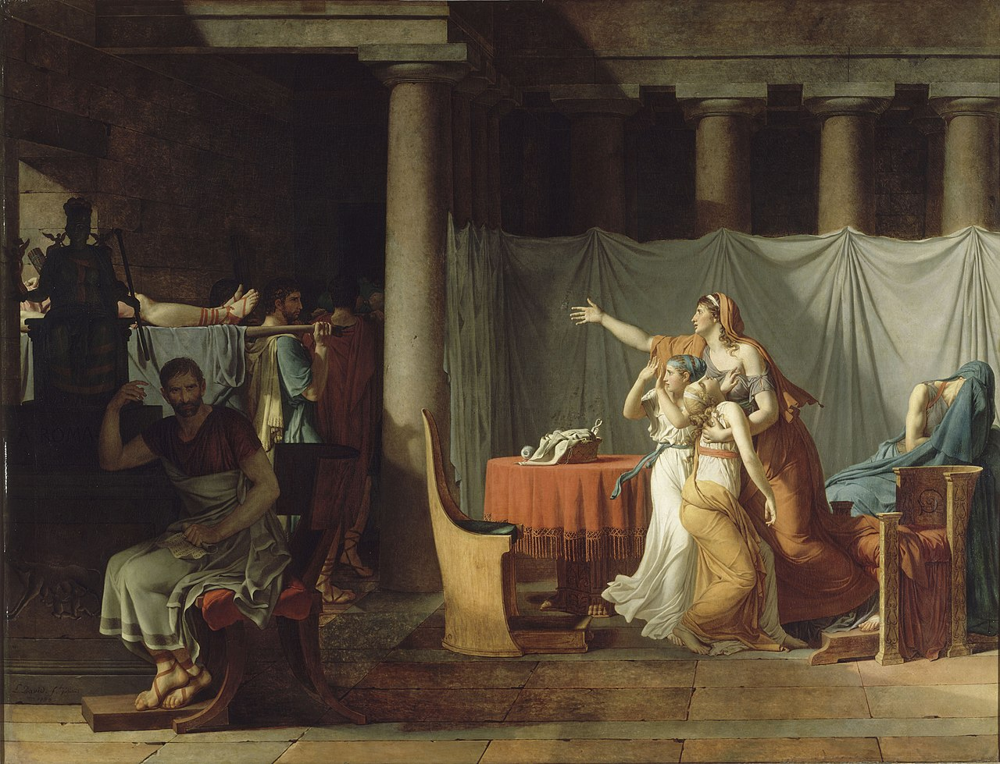
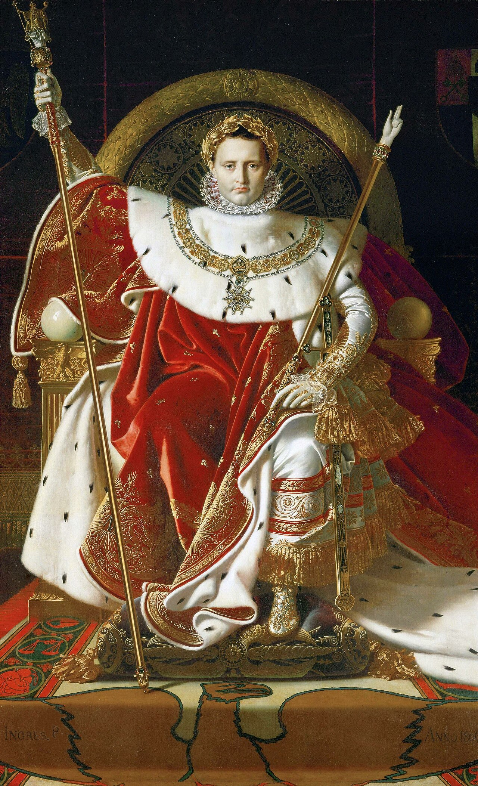

Meesterwerk: De Eed van de Horatii
Jacques-Louis David, 1784

⚜️ UITGEBREIDE STIJLFIGUREN
🏛️ KLASSIEKE IDEALEN
Griekse en Romeinse voorbeelden: De kunst van de oudheid wordt als perfect beschouwd. Beeldhouwwerk is belangrijker dan schilderkunst.
Heroïsche naakten: Het menselijk lichaam geïdealiseerd zoals bij de Grieken. Gladde huid, gespierde torso's.
📐 HELDERE LIJNEN & VORMEN
Contour boven kleur: Scherpe, duidelijke omtreklijnen. Geen sfumato maar precisie.
Flakke ruimte: Geen diepe Barokke ruimte maar een meer vlakke, decoratieve compositie.
🎨 BEZADIGD KLEURENPALET
Aardse tonen: Bruin, oker, grijs, wit. Geen felle Barokke kleuren. De soberheid is moreel.
Lokaal kleur: Objecten hebben hun "eigen" kleur, niet beïnvloed door licht.
📜 MORELE LESSEN
Didactisch: Kunst moet deugd onderwijzen. Voorbeelden van zelfopoffering, patriottisme.
Historische accuratesse: De kleding, architectuur, wapens worden nauwkeurig onderzocht.
📚 TIJDSGEEST CONTEXT (1750-1850)
🌍 POLITIEK PERSPECTIEF
Het Neoclassicisme (1750-1850) ontstond in een tijdperk van fundamentele politieke transformatie die Europa's politieke landschap voorgoed veranderde. De Verlichting, die in de late 17e eeuw begon met denkers als René Descartes en John Locke, legde de intellectuele basis door rede, empirisme en individuele vrijheid boven traditie en dogma te stellen. Verlichte filosofen zoals Voltaire, Montesquieu en Jean-Jacques Rousseau bekritiseerden het absolutisme en stelden alternatieve staatsmodellen voor: Montesquieu's trias politica (scheiding der machten) en Rousseau's sociaal contract, waarin de soevereiniteit bij het volk berust. Deze ideeën werden verspreid door nieuwe instituties: literaire salons, vrijmetselaarsloges, koffiehuizen en een explosieve groei van drukpers en periodieken. De Encyclopédie van Diderot en d'Alembert (1751-1772) systematiseerde de kennis van de tijd en democratiseerde de toegang tot verlichte ideeën.
Deze intellectuele stroming vertaalde zich in verlicht absolutisme, waarbij vorsten zoals Frederik de Grote van Pruisen, Catharina de Grote van Rusland en keizer Jozef II van Oostenrijk hun macht gebruikten om rationele hervormingen door te voeren: modernisering van rechtssystemen, bevordering van onderwijs en beperking van kerkelijke macht. Dit creëerde een paradox waarin vorsten hun eigen autoriteit versterkten in naam van vooruitgang, maar ook de kiem legden voor bredere politieke participatie.
De Franse Revolutie (1789-1799) vormde het keerpunt. Voortgekomen uit financiële crisis, sociale ongelijkheid en de onvrede van de opkomende bourgeoisie, begon de revolutie met de bijeenroeping van de Staten-Generaal en de bestorming van de Bastille op 14 juli 1789. De revolutie schafte het ancien régime af, vernietigde de privileges van adel en geestelijkheid, en verhief vrijheid, gelijkheid en broederschap tot staatsprincipe. De Constitutionele Monarchie (1789-1792) werd gevolgd door de Eerste Republiek (1792-1799), de Terreur onder Robespierre (1793-1794), en uiteindelijk de staatsgreep van Napoleon Bonaparte in 1799. De revolutie introduceerde universele rechten, seculiere staat en nationale identiteit, maar toonde ook de donkere kant van radicale politieke verandering door massale executies en politieke instabiliteit.
De Napoleontische Oorlogen (1803-1815) verspreidden revolutionaire ideeën en de Napoleontische Code door heel Europa, ondanks de militaire conflicten die meer dan een miljoen levens eisten. Napoleon reorganiseerde Europa's politieke kaart, ontbond het Heilige Roomse Rijk en verspreidde meritocratische principes. Zijn nederlaag bij Waterloo in 1815 en het Congres van Wenen probeerden de oude orde te herstellen, maar konden de verlichte ideeën niet ongedaan maken.
Na 1815 ontwikkelde nationalisme zich als dominante ideologie. De revoluties van 1848 toonden de kracht van nationale aspiraties, waarbij Duitsland en Italië werden verenigd door gemeenschappelijke culturele identiteit, en volkeren zoals Griekenland, Servië, Bulgarije en Polen onafhankelijkheid streden tegen het Ottomaanse en Russische rijk. Nationalisme transformeerde Europa van dynastieke monarchieën naar natiestaten.
De sociale dynamiek werd gekenmerkt door de opkomst van een zelfbewuste bourgeoisie die door handel, industrie en intellectuele activiteit haar positie versterkte. Literaire salons werden centra van politieke discussie, en de nieuwe publieke sfeer werd een politieke macht. De Industriële Revolutie, die in de late 18e eeuw in Groot-Brittannië begon, transformeerde economische en sociale structuren, creëerde nieuwe rijkdom en leidde tot urbanisatie.
Deze politieke context verklaart direct de kenmerken van het Neoclassicisme. De terugkeer naar klassieke orde, symmetrie en rationele compositie weerspiegelt de verlichte voorliefde voor rede, wetmatigheid en universele principes. De archeologische nauwkeurigheid, gevoed door opgravingen in Pompeï en Herculaneum, verbond kunst met wetenschappelijke methodologie. Antieke thema's uit Romeinse en Griekse geschiedenis – zoals David's 'De Eed van de Horatii' – verheerlijkten republikeinse deugden van zelfopoffering, burgerzin en morele vastberadenheid, en boden modellen voor het ideale staatsburgerschap in een tijd van revolutie. De strakke contour en friesachtige compositie riepen associaties op met duidelijke wetten en principes. De heldere volumes en heroïsche naakten belichaamden de stoïcijnse morele kracht die de nieuwe burgerij nastreefde. De koelheid en helderheid van het palet weerspiegelde rationele distantie en objectiviteit. Het Neoclassicisme was niet slechts een artistieke stijl, maar een visuele articulatie van de politieke idealen van een tijdperk dat de basis legde voor de moderne democratische staat en nationale identiteit.
Bronnen: Wikipedia - Neoclassicism, Age of Enlightenment, French Revolution, Napoleonic Wars, Rise of nationalism in Europe.
📖 LITERAIR PERSPECTIEF
Het neoclassicisme in de literatuur (1760-1830) vertegenwoordigde een terugkeer naar de klassieke idealen van orde, harmonie en rede, als reactie tegen de als te frivool beschouwde rococo. Deze beweging werd diep beïnvloed door de archeologische ontdekkingen in Pompeii en Herculaneum, die een hernieuwde interesse in de Grieks-Romeinse oudheid veroorzaakten, en door de Verlichtingsfilosofie die rede boven emotie stelde. In Duitsland ontwikkelde zich de belangrijkste neoclassicistische beweging met Johann Wolfgang von Goethe en Friedrich Schiller als centrale figuren. Goethe's vroegste werk 'Iphigenie auf Tauris' (1787) was een perfect voorbeeld van neoclassicistische dramatiek: het herschreef het klassieke verhaal van Euripides in een zuiver, edel Duits dat de klassieke harmonie zocht. Zijn latere werk, waaronder 'Faust' (eerste deel 1808), integreerde klassieke thema's met romantische elementen. Schiller's historische drama's zoals 'Die Jungfrau von Orleans' (1801) en 'Wilhelm Tell' (1804) toonden zijn meesterschap in het creëren van heroïsche figuren die de klassieke deugden van moed, eer en patriottisme belichaamden. De Engelse literatuur zag de ontwikkeling van de neoclassicistische poëzie met dichters als Alexander Pope, wiens 'Essay on Man' (1733-1734) en vertalingen van Homerus de klassieke idealen van evenwicht, redelijkheid en morele verheffing vertolkten. Later bracht de Romantiek een reactie tegen het neoclassicisme, maar schrijvers als Jane Austen bleven neoclassicistische waarden van orde, beheersing en sociale regelmaat handhaven in romans als 'Pride and Prejudice' (1813) en 'Sense and Sensibility' (1811). In Frankrijk bleef de invloed van de 17e-eeuwse klassieke tragedie sterk, maar schrijvers als Voltaire bleven neoclassicistische principes verdedigen in hun kritieken en filosofische verhandelingen. De schilder Jacques-Louis David, de belangrijkste neoclassicistische kunstenaar, was diep beïnvloed door de literatuur van zijn tijd en creëerde werken die direct naar klassieke teksten verwezen, zoals 'De Dood van Socrates' (1787) en 'De Eed van de Horatii' (1784). De relatie tussen David's schilderkunst en de neoclassicistische literatuur was wederzijds: zijn heldere compositie, heroïsche figuren en morele ernst weerspiegelden de idealen die ook in de toneelstukken van Goethe en Schiller te vinden waren. Wat de thema's betreft, overheersten de burgerdeugd, zelfopoffering voor het vaderland, de superioriteit van rede boven emotie, en de navolging van klassieke voorbeelden. De neoclassicistische literatuur zocht niet naar het originele of het persoonlijke, maar naar het universele en tijdloze, net zoals de beeldende kunst terugkeerde naar de 'edle Einfalt und stille Größe' die Johann Joachim Winckelmann had gedefinieerd als het ideaal van Griekse kunst. Ook de vorm was strikt gereguleerd: de drie-eenheid van tijd, plaats en handeling in het drama, en de klassieke versvormen in de poëzie, weerspiegelden dezelfde ordening en symmetrie die we vinden in de architectuur en schilderkunst van deze periode.
🧠 PSYCHOLOGISCH PERSPECTIEF
Het neoclassicisme (1760-1830) vertegenwoordigt een fundamentele psychologische heroriëntatie na de frivoliteit van het rococo. Waar het rococo vluchtte in fantasie en plezier, zocht het neoclassicisme terugkeer naar orde, rede en morele ernst. Vanuit psychologisch perspectief kan deze beweging worden begrepen als een collectieve behoefte aan discipline, structuur en betekenis - een reactie tegen wat werd ervaren als morele en esthetische decadentie.
De herontdekking van Pompeï en Herculaneum in de 18e eeuw, gecombineerd met de invloedrijke geschriften van Winckelmann over Griekse kunst, creëerde een psychologische conditie van nostalgie naar een ideale klassieke wereld. Deze nostalgie was niet slechts esthetisch maar diep moreel: de klassieke oudheid werd gezien als een tijd van burgerdeugd, rationeel inzicht en nobele eenvoud. Psychologisch gezien projecteerde men op het verleden een ideaalbeeld waaraan het heden moest voldoen.
De psychologie van het neoclassicisme is er een van bewuste zelfbeheersing en gerationaliseerde emotie. In tegenstelling tot de barokke extase of rococo speelsheid, toont neoclassicistische kunst figuren in poses van beheerste waardigheid. Zelfs in momenten van intense emotie - zoals Davids 'De Dood van Socrates' - blijven de figuren gecomposeerd en rationeel. Dit weerspiegelt een ideaal van de verlichte mens: iemand die zijn passies beheerst door rede.
De politieke dimensie van het neoclassicisme onthult ook een collectieve psychologie van hoop en idealisme. De Franse Revolutie omarmde neoclassicistische esthetiek als visuele expressie van haar waarden: burgerdeugd, opoffering voor het algemeen belang, terugkeer naar pure principes. Psychologisch gezien bood deze kunst een identiteit en een ideaal waarnaar de revolutionaire samenleving kon streven. Het was kunst die niet alleen verfraaide maar ook vormde - die psychische attitudes van toewijding en morele ernst trachtte te kweken.
Toch bevat het neoclassicisme ook een psychologische spanning tussen ideaal en realiteit. De strenge formaliteit kon worden ervaren als beklemmend, de nobele poses als onnatuurlijk. De nadruk op rede en beheersing negeerde aspecten van de menselijke ervaring die irrationeel, emotioneel of chaotisch zijn. Deze spanning zou uiteindelijk leiden tot de reactie van het romanticisme, dat precies die onderdrukte emotionele en individuele dimensies zou vieren.
Psychologisch gezien kan het neoclassicisme worden begrepen als een poging tot maatschappelijke en individuele orde - een poging om, door middel van esthetische discipline, een innerlijke en uiterlijke wereld te creëren die geregeerd wordt door rede, deugd en klassieke harmonie. Het is een psychologie van aspiratie en idealisme, maar ook van onderdrukking en ontkenning van het irrationele. Deze spanning tussen ideaal en werkelijkheid, tussen rede en emotie, zou de Europese cultuur nog eeuwenlang bezighouden.
⚙️ HISTORISCH PERSPECTIEF
- De opgravingen van Pompeï en Herculaneum (vanaf 1738) tonen de oudheid als tastbaar
- Winckelmann's "Geschichte der Kunst des Altertums" (1764) schept de kunstgeschiedenis als discipline
- De industriële revolutie begint (stoommachine, spinmachine)
- De bevolking groeit explosief
- Parijs wordt herschikt (brede boulevards, openbare werken)
🎭 FILOSOFISCH PERSPECTIEF
- Kant's kritische filosofie: wat kunnen we weten? ("Kritik der reinen Vernunft", 1781)
- De Verlichting gelooft in vooruitgang door rede
- Rousseau's "Contrat social" (1762) legitimeert volkssoevereiniteit
- Neoplatonisme en de idee van het "schone" als objectief
- De esthetica wordt een filosofische discipline (Baumgarten, Kant)
🎨 TIEN MEESTERWERKEN - GEDETAILLEERDE ANALYSE
1. "De Eed van de Horatii" (1784) — Jacques-Louis David
Louvre, Parijs · 330 × 425 cm · Olieverf op doek
Achtergrond: Geschilderd voor koning Lodewijk XVI, maar wordt het symbool van de Franse Revolutie. Drie broers zweren voor Rome te vechten.
🔍 STIJLANALYSE
Compositie: Drie bogen scheiden de ruimte. Links de vader, midden de broers, rechts de vrouwen. Man = actie, vrouw = emotie.
Lichaamstaal: Gestileerde, choreografische eed. Gespierde, heldhaftige lichamen in klassieke poses.
Kleur: Rode mantels (Rome, bloed), witte toga's (deugd), grijze achtergrond (strengheid).
2. "De Dood van Marat" (1793) — Jacques-Louis David
Koninklijke Musea, Brussel · 165 × 128 cm · Olieverf op doek

Achtergrond: Jean-Paul Marat, revolutionair journalist, werd vermoord in zijn bad. Politieke propaganda als heiligenbeeld.
🔍 STIJLANALYSE
Christelijke iconografie: Marat lijkt op Christus in de pieta. Het doosje naast het bad heeft een kruisvorm.
Simplificatie: Geen achtergrond, geen details. Alleen Marat, het bad, het mes, de brief.
Licht: Zacht, diffuus licht op Marat's gezicht. Bijna goddelijke verhevenheid.
3. "De Kroning van Napoleon" (1805-1807) — Jacques-Louis David
Louvre, Parijs · 629 × 979 cm · Olieverf op doek

Achtergrond: Napoleon kroont zichzelf tot keizer. De grootste propaganda-schildering van het keizerrijk.
🔍 STIJLANALYSE
Het moment: Napoleon kroont zichzelf - niet de paus, niet God. Revolutionair en reactionair tegelijk.
Compositie: Napoleon centraal, verheven op een podium. De lijnen convergeren naar hem.
Kleur en pracht: Robijnrood, goud, purper - weelde van het keizerlijke hof.
4. "Psyche Herleefd door de Kus van Cupido" (1787-1793) — Antonio Canova
Louvre, Parijs · 155 × 168 cm · Marmer

Achtergrond: Canova's meest bekende werk - marmer wordt zacht en levend gemaakt.
🔍 STIJLANALYSE
Zacht marmer: De huid lijkt zacht, de lippen zijn vol. Marmer wordt vlees - technisch meesterschap.
Compositie: De twee figuren vormen een X. Een dans van liefde en dood.
Idealisatie: Perfecte lichamen volgens klassieke maatstaven. Geen imperfecties.
5. "De Sabijnse Maagden" (1799) — Jacques-Louis David
Louvre, Parijs · 385 × 522 cm · Olieverf op doek

Achtergrond: Het verhaal van de Sabijnse vrouwen die tussen hun Romeinse echtgenoten en Sabijnse families komen te staan. Een oproep tot verzoening na de Revolutie.
🔍 STIJLANALYSE
Centrale figuur: Een vrouw scheidt de strijdende mannen. Zij is de held - niet de krijgers. Dit is nieuw: vrouwelijke heldhaftigheid.
Compositie: De figuren vormen een halve cirkel. Het is bijna een frieze - plat, decoratief, als een Grieks reliëf.
Kleur: Warmere tonen dan David's eerdere werken. De Revolutie is voorbij, er mag weer wat menselijkheid in.
Boodschap: "Vergiffenis is beter dan wraak." David probeert Frankrijk te helen na de Terreur.
6. "Napoleon bij de Grote St. Bernardpas" (1801) — Jacques-Louis David
Verschillende versies · 259 × 221 cm · Olieverf op doek

Achtergrond: Napoleon steekt de Alpen over naar Italië. David maakte vijf versies voor verschillende paleizen. Het is pure propaganda - Napoleon werd eigenlijk door een ezel gedragen.
🔍 STIJLANALYSE
Heroïsch: Napoleon te paard, de manen wapperen, de mantel golft. Dit is geen militaire tekening maar een mythe.
De namen: In de rotsen zijn Hannibal, Karel de Grote en Napoleon gekerfd - de grote veldheren der geschiedenis.
Kleur: Intense rode mantel, gouden details, dramatische lucht. Dit is theater, geen documentaire.
Politiek: Napoleon als nieuwe Alexander, nieuwe Caesar. De kunst maakt de man groter dan hij is.
7. "Grande Odalisque" (1814) — Jean-Auguste-Dominique Ingres
Louvre, Parijs · 91 × 162 cm · Olieverf op doek

Achtergrond: Een odalisque (haremdame) met een onnatuurlijk lange rug. Ingres was een leerling van David maar ging zijn eigen weg. Dit werk veroorzaakte schandalen om zijn "perversiteit".
🔍 STIJLANALYSE
Verlengde rug: De rug heeft drie extra wervels. Ingres verkozen lijn boven anatomie. Schoonheid gaat boven correctheid.
Contour: Scherpe, gladde lijnen om het lichaam. Geen modelering, geen schaduw. Het lijkt op een tekening met kleur.
Oosterse setting: De pauwenveren, de tulband, de spiegel - exotisme was mode. Maar het is een verbeelde Orient, niet echt.
Blik: Ze kijkt over haar schouder, direct, zonder schaamte. Dit is geen slachtoffer maar iemand die haar eigen seksualiteit bezit.
8. "Paolina Borghese als Venus Victrix" (1805-1808) — Antonio Canova
Galleria Borghese, Rome · Lengte 160 cm · Marmer

Achtergrond: Paolina Borghese, zus van Napoleon, als de godin Venus. Ze ligt op een daybed, half naakt, met een appel in haar hand (de prijs van de schoonheidswedstrijd).
🔍 STIJLANALYSE
Portret als godin: Dit is een portret én een mythologisch beeld. Paolina is herkenbaar, maar verheven tot goddelijke status.
Marmer als vlees: Canova's handwerk is ongelooflijk. Het kussen lijkt echt zacht, de huid lijkt warm. Marmer wordt leven.
Stijl: Glad, gepolijst, geen ruwheid. Dit is de ideale schoonheid - geen poriën, geen imperfecties, alleen perfectie.
Controversie: Een half-naakte aristocrate als Venus was gewaagd. De Borghese-familie liet het beeld zelfs jarenlang niet zien aan het publiek.
9. "De Lictoren brengen Brutus de Lijken van zijn Zonen" (1789) — Jacques-Louis David
Louvre, Parijs · 323 × 422 cm · Olieverf op doek

Achtergrond: Lucius Junius Brutus, stichter van de Romeinse Republiek, liet zijn zonen executeren omdat ze een samenzwering tegen de republiek hadden gepleegd. Vaderland boven familie.
🔍 STIJLANALYSE
Twee scènes: Links Brutus in de schaduw, starrend in het niets, terwijl zijn zonen worden binnengedragen. Rechts de vrouwen die rouwen. Man = plicht, vrouw = emotie.
Stoïcisme: Brutus' gezicht toont geen emotie. Hij heeft het juiste gedaan, hoe pijnlijk ook. Dit is deugd in actie.
Compositie: De architraaf bovenaan scheidt de twee werelden. Onder: drama. Boven: het standbeeld van de godin Rome - de eeuwige republiek.
Timing: Geschilderd in 1789, het jaar van de Franse Revolutie. De boodschap: republikeinen moeten bereid zijn alles op te offeren.
10. "Napoleon I op zijn Keizerlijke Troon" (1806) — Jean-Auguste-Dominique Ingres
Musée de l'Armée, Parijs · 259 × 162 cm · Olieverf op doek

Achtergrond: Napoleon als keizer, gekleed in kroningsgewaden, met alle symbolen van macht. Het is geen portret maar een icon - Napoleon als goddelijk heerser.
🔍 STIJLANALYSE
Byzantijnse stijl: Napoleon lijkt op een icon, een heilige, een god. De starre houding, de hand op de knuppel, de lauwerkrans - alles spreekt absolute macht uit.
Details: De adelaar van Charlemagne, de bijen van de Bourbons (die Napoleon adopteerde), het zwaard van de kroning. Elk symbool is zorgvuldig gekozen.
Blik: Napoleon kijkt neer op de kijker, maar ook door de kijker heen. Hij kijkt naar de eeuwigheid. Dit is geen mens maar een monument.
Stijl: Ingres' gladde, lineaire stijl is perfect voor dit soort iconografie. Geen menselijke imperfectie, alleen majesteit.
📚 CONCLUSIE: DEUGD IN STEEN EN VERF
Het Neoclassicisme leert ons:
- Dat kunst politiek is: David's schilderijen zijn propaganda
- Dat de oudheid ideaal is: Grieken en Romeinen als perfect
- Dat soberheid deugd is: Geen Barokke pracht maar klassieke beheersing
- Dat het lichaam heroïsch is: Naakte vorm als ideaal
- Dat kunst onderwijst: Morele lessen in beeld
Het Neoclassicisme is de esthetiek van de rede.